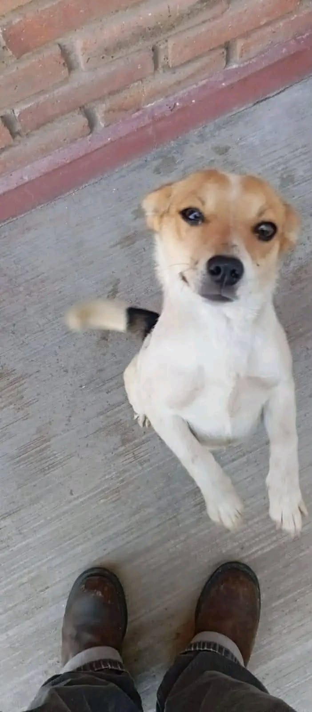
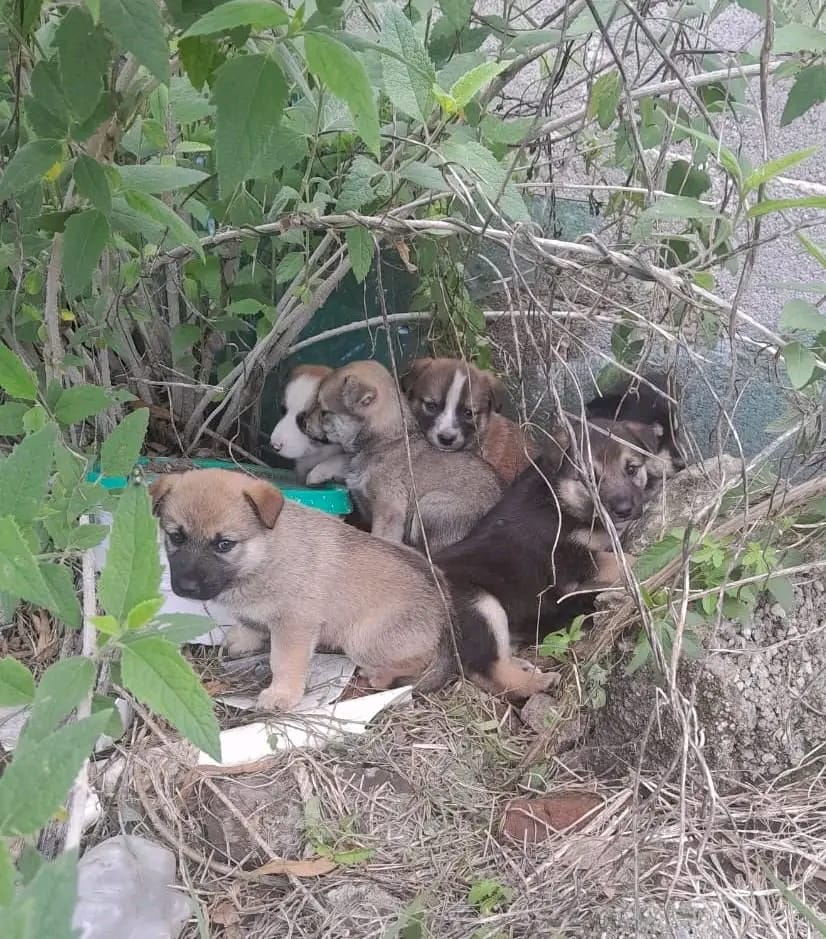

Mision ImPawsible


Somos Misión ImPawsible, un proyecto comunitario creado con el propósito de contribuir al bienestar de perros y gatos en situación de abandono. Nuestra iniciativa busca promover la adopción responsable, fomentar la esterilización y sensibilizar a la población sobre la importancia del cuidado y la protección animal.
Creemos que, mediante el trabajo colaborativo, el uso de herramientas digitales y la participación de la comunidad, es posible generar un cambio positivo que mejore la calidad de vida de los animales y fortalezca la cultura de la tenencia responsable.

